Travel South: صور وقصص
صورة من بيرو، 2014: يحمل Jani Korpi جمجمة عريضة مستديرة تسمّيها المجموعة Starchild 2. الاسم مستعار من جمجمة مختلفة في المكسيك عرّف بها Lloyd Pye؛ ويحرص هذا المعرض على الفصل بين الجمجمتين.
خلّفت الرحلات نفسها أيضًا أثرًا من الحجر. في عام 2011 صوّر بيرو وبوليفيا بترتيب الرحلة، من ساحل نازكا إلى ملح Uyuni: الصحراء، وجزر القصب، وأسوار Sacsayhuamán المتعرجة فوق كوسكو، والأحجار المتقنة التركيب في Tiwanaku وPuma Punku.
في 15 فبراير 2024، صوّر في المتحف المصري بالقاهرة رؤوسًا حجرية قد تذكّر ملامحها الجانبية بجماجم بيرو المستطيلة. الشبه بصري فقط: رؤوس القاهرة منحوتات، وجماجم بيرو عظام. وفي مادة Paracas المدروسة يُقرأ الرأس الطويل على أنه تعديل جرى في الطفولة، لا على أنه نتيجة للحمض النووي.

«سافرت إلى كل أنحاء العالم، وها أنا أحمل جمجمة Starchild 2 بين يديّ.»
معارض الصور: 15 مكانًا
ساحل بيرو
خطوط نازكا
كيف ترسم طائرًا طنّانًا أكبر من ملعب كرة قدم من دون أن تراه من الأعلى قط؟


مقابر نازكا وقنواتها المائية: Chauchilla وCahuachi وCantalloc
في الصحراء جنوب نازكا، لا يزال الموتى جالسين في قبورهم بشعرهم الطويل المجدول سليمًا.


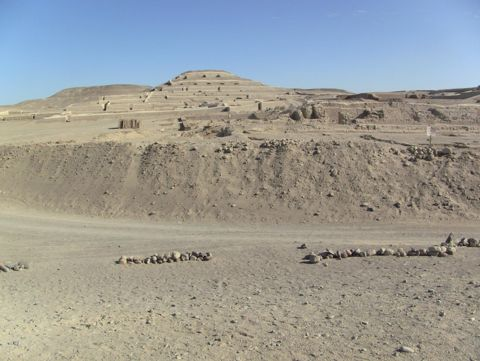


اقرأ المزيد: مقابر نازكا وقنواتها المائية: Chauchilla وCahuachi وCantalloc (عدد الصور: 10)
Paracas وHuacachina
في شبه جزيرة Paracas تنتهي الصحراء مباشرة عند بحر بارد يعجّ بالحياة.


تيتيكاكا
Sillustani
لماذا قد يبني أحدهم برجًا أعرض من أعلاه منه من أسفله؟


Puno وبحيرة تيتيكاكا
تقول أسطورة أنديزية إن الشمس نفسها وُلدت من هذه البحيرة.


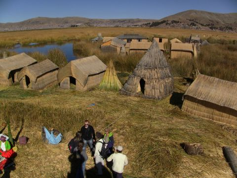

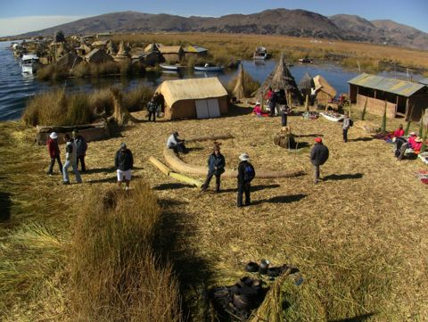


Chucuito: Inca Uyo
عشرات الأحجار القضيبية تقف منتصبة داخل سياج صغير مسوّر بجوار بحيرة تيتيكاكا.


Aramu Muru (Hayu Marca)
مدخل متقن، مربع تقريبًا بطول سبعة أمتار تقريبًا لكل ضلع، منحوت في جرف أحمر، ولا غرفة خلفه.


كوسكو والوادي المقدس
كوسكو
تحمل أسوار الإنكا في كوسكو آثار زلزالين قويين. وقع أحدهما في زمن الإنكا ( Combey et al. 2022 ).


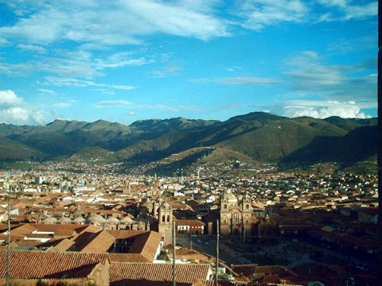


Sacsayhuaman
ثلاثة أسوار متعرجة تصعد المنحدر فوق كوسكو، أحجارها مركّبة من دون ملاط.


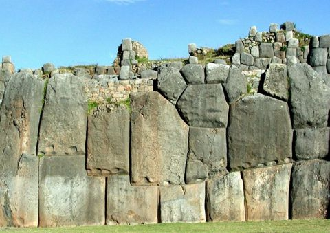


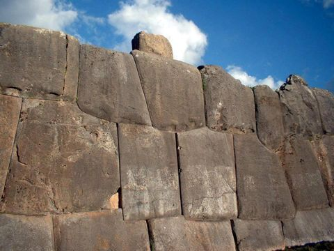

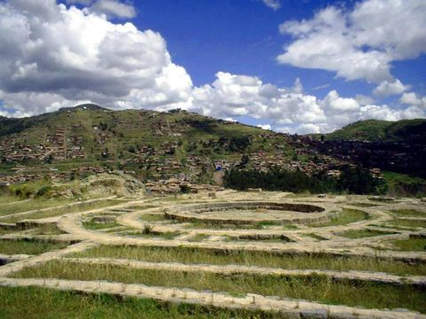


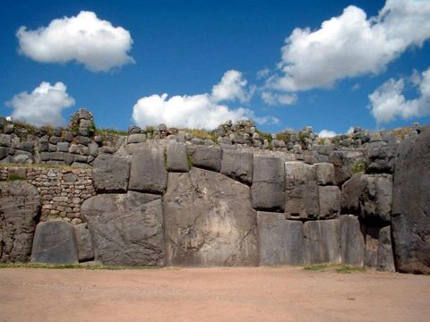


ماتشو بيتشو
لم يعثر الإسبان قط على ماتشو بيتشو، ومع ذلك كان مزارعون محليون يعيشون فيها عندما وصل Hiram Bingham عام 1911.


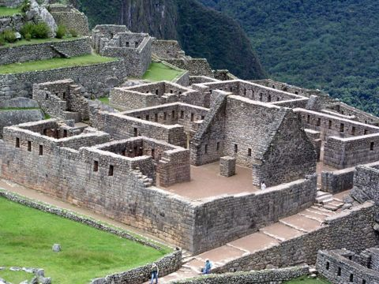


Ollantaytambo
أحجار وردية ضخمة متروكة على الطريق من محجر على الضفة الأخرى من النهر.


Pisac والوادي المقدس
الجرف فوق Pisac مليء بالقبور، مما يجعله من أكبر مقابر الإنكا المعروفة.


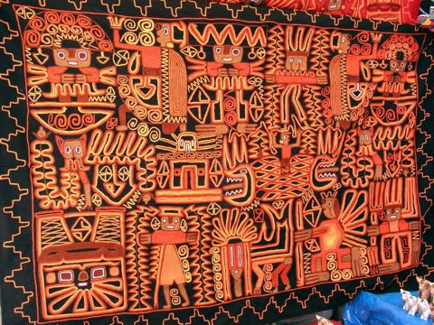


بوليفيا
Tiwanaku وPuma Punku
تظهر كتلة H نفسها مرارًا وتكرارًا في Puma Punku، مقطوعة بوجوه مستوية وزوايا داخلية حادة.


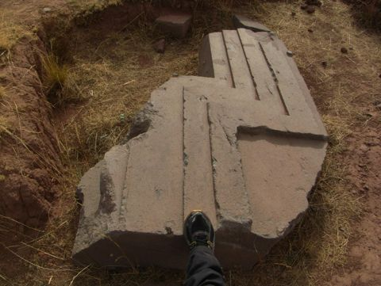


El Fuerte de Samaipata
سلسلة كاملة من الحجر الرملي، بطول نحو 220 مترًا، نُحتت فيها قنوات ومقاعد وكوى وأشكال حيوانات.


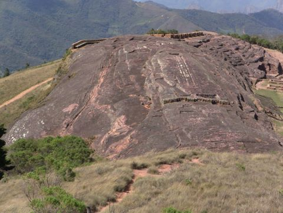


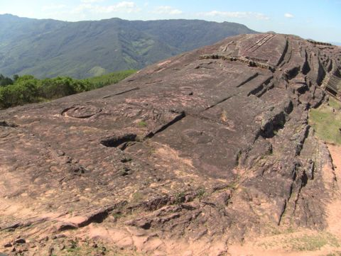


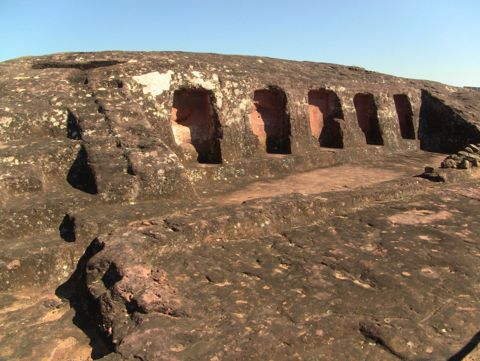

Salar de Uyuni
هذا السهل الملحي مستوٍ إلى حد أنه يُستخدم لمعايرة أجهزة قياس الارتفاع في الأقمار الصناعية.


القصص
ماذا تخبرنا الجماجم؟
على جانب الجمجمة كُتب MRI DB بالحبر. هل يمكن لبضعة أحرف أن تخبرنا من أين جاءت هذه الجمجمة وأين توجد سجلاتها؟ تتتبّع هذه الصفحة هذا الخيط إلى أبعد ما تسمح به المصادر المفتوحة.
الجماجم الظاهرة في الصور رفات بشرية. لا تروي هذه الصفحة إلا ما يمكن رؤيته في الصور وبطاقات المعارض وما تقوله الأبحاث المنشورة. لا تستطيع الصورة أن تخبرنا بعمر المتوفى ولا بأمراضه ولا بأصله.
صور الجماجم، بيرو 2014

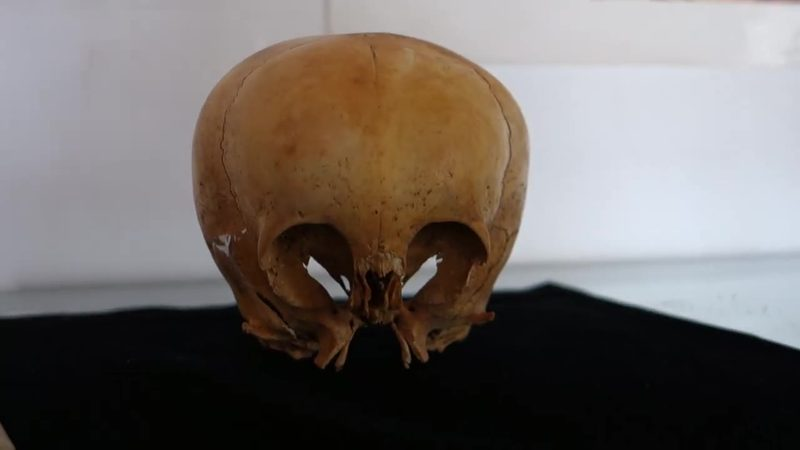


القاهرة 2024: رؤوس طويلة مشابهة في مصر
في 15 فبراير 2024، صوّر Jani في المتحف المصري بالقاهرة رؤوسًا حجرية يمتد أعلاها بعيدًا إلى الخلف. يشبه الشكل جماجم بيرو، لكن الصور التُقطت في قارة أخرى وبعد نحو تسع سنوات من صور الجماجم في بيرو (2014).


الصلة ببيرو بصرية فقط. رؤوس العمارنة منحوتات، وجماجم بيرو رفات بشرية؛ وفي مادة Paracas المدروسة فُسّر الرأس الطويل بأنه تشكيل جرى في الطفولة (الخلفية البحثية). التُقطت صور القاهرة عام 2024، وصور بيرو عام 2014. الرسوم المنفّذة بالذكاء الاصطناعي لهذين الزوجين موجودة في صفحة المدينة الحجرية: الزوج 12 والزوج 13 (وجوه القاهرة الحجرية وجماجم بيرو).
من علّم من؟


في Puma Punku يعطي طرف إصبع مقياسًا لزاوية داخلية منحوتة في الحجر. وفي كوسكو تتوقف العين عند وصلة: تنعطف مرات كثيرة، وتتبع حافة الحجر المجاور كل منعطف. في عام 1549 سمع Cieza de León في Tiwanaku أن الإنكا اتخذوا هذه الأطلال نموذجًا لأسوار كوسكو. وبعد ستين عامًا كتب Garcilaso، المنحدر من أصل إنكي، العكس: أن معلّمًا إنكيًا بنى Tiwanaku. ويضع الكربون المشع بناء Puma Punku نحو 580–710 للميلاد، أي قبل إمبراطورية الإنكا بقرون. فأيّ الروايتين تصمد عند مقارنة الأحجار؟
لا تدعم الأحجار أيًّا من الروايتين كما هي. فقد كان بناة Tiwanaku قد ماتوا منذ قرون قبل أسوار كوسكو، والوصلات مصنوعة بطريقة مختلفة: ففي Tiwanaku تتكرر القطعة الموحّدة نفسها وتُقفل الوصلات بمشابك معدنية، بينما يُركَّب كل حجر في الجدار الإنكي على جيرانه. ومع ذلك لا تستطيع الوصلات وحدها أن تخبرنا من تعلّم ممن. كان الإنكا يعرفون الأطلال، وتُظهر رواية Garcilaso أنهم أرادوها جزءًا من تاريخهم الخاص. والأمر نفسه يحدث في كوسكو: بنى الإسبان فوق أسوار الإنكا، ورمّم القرن العشرون كليهما.
وجوه المدينة الحجرية (رسم بالذكاء الاصطناعي · خيال)
خيال. رسوم بالذكاء الاصطناعي لمدينة حجرية متخيَّلة. يعرض كل زوج أولًا صورة التقطها Jani Korpi في بيرو، ثم رسمًا بالذكاء الاصطناعي مبنيًا على شكلها. المدينة الحجرية وسكانها من نسج الخيال.
01 · صانع النظارات يضبط منشورًا

02 · حمولة حجارة تمرّ في الزقاق

03 · قاطع الحجارة يتفقّد وصلة

تعابير الشخصيات ولون بشرتها وشعرها وحياتها اليومية تنتمي إلى المدينة الحجرية المتخيَّلة. تُظهر بعض الصور القطعة نفسها من اتجاهات مختلفة.
المعرض بكل اللغات
افتح المعرض الكامل، بوجهاته الخمس عشرة، بلغتك.